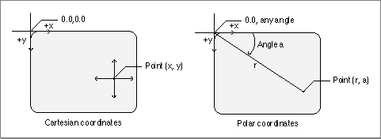

Legacy Document
Important: The information in this document is obsolete and should not be used for new development.
Important: The information in this document is obsolete and should not be used for new development.


Mathematical Functions
QuickDraw GX provides mathematical functions for
A description of each QuickDraw GX mathematics function is provided in the section "Mathematical Functions" beginning on page 8-42.
- fixed-point operations on
Fixed,long, andfractnumber formats- fixed-point operations on a
widenumber format- vector operations
- Cartesian and polar coordinate point conversions
- random number generation
- linear and quadratic roots
- bit analysis
Operations on Fixed, long, and fract Numbers
QuickDraw GX provides functions that perform operations onFixed,long, andfractnumber formats. Functions are provided that
The functions that perform operations on
- determine the product of two numbers (a b)
- determine the quotient of two numbers (a / b)
- determine the product of two numbers and the quotient of a third number (a b) / c
- determine both the sine and cosine of an angle measured in degrees [sine(angle) and cosine(angle)]
- determine the square root of a number (a)1/2
- determine the cube root of a number (a)1/3
- determine the magnitude of a two-dimensional vector
Fixed,long, andfractnumber formats are described in the section "Fixed-Point Operations" beginning on page 8-42.Operations on wide Numbers
QuickDraw GX provides functions for operations onwidenumbers. Functions are provided that
The functions that perform operations on
- determine the sum of two
widenumbers (a + b)- determine the difference between two
widenumbers (a - b)- determine the product, as a
widenumber, of twolongnumbers (a b)- determine the quotient, as a
longnumber (without remainder), of awidenumber divided by alongnumber (a / b)- determine the result, as a
longquotient and alongremainder, of dividing awidenumber by alongnumber (a / b + remainder)- determine the square root of a
widenumber (a)1/2- negate a
widenumber (-a)- shift bits in a
widenumber to the right or left- determine the highest order bit in the absolute value of a
widenumber- compare two
widenumbers
widenumber formats are described in the section "Operations on wide Numbers" beginning on page 8-49.Vector Operations
QuickDraw GX provides vector operation functions that
The use of QuickDraw GX vector operation functions is described in the section "Performing Vector Operations" beginning on page 8-29. These functions are described in the section "Vector Operations" beginning on page 8-54.
- determine the dot product of two vectors (v1 v2)
- determine the dot product of two vectors and divide by a number (v1 v2)/a
Cartesian and Polar Coordinate Conversion
You use Cartesian coordinates to specify points with QuickDraw GX. Some shapes, such as rectangles, are more easily drawn using Cartesian coordinates; however, some shapes that have symmetry about a point are more easily drawn with polar coordinates. For that reason, QuickDraw GX provides conversion routines so that you can work in either coordinate system.For QuickDraw GX, Cartesian coordinates have a positive x direction to the right and a positive y direction downward (not upward, as in many other Cartesian coordinate systems). Cartesian coordinates are written in the order (x, y). The origin is at (0, 0). The
gxPointstructure describes points using Cartesian coordinates.Polar coordinates have the same origin point as Cartesian coordinates, but locations are specified differently. The polar coordinate of a point is specified by the length of the radius vector r from the origin to the point and the direction of the vector is specified by polar angle a. Angles in QuickDraw GX are measured clockwise in degrees from the Cartesian coordinate positive x-axis. The polar coordinate of a point specified by a vector of length r and direction a degrees from the x-axis is written as point (r, a). The polar origin point has the coordinates (0, a), where a is any angle. Points having polar coordinates are defined by the
gxPolarstructure. ThegxPolarstructure is described in the section "Constants and Data Types" beginning on page 8-35. The relationship of the Cartesian and polar coordinates is shown in Figure 8-1.Figure 8-1 Cartesian and polar coordinates

The
gxPolarlocation (r, a) corresponds to thegxPointlocation (r cos(a), r sin(a)). The mathematical relationship between the two coordinate systems is given by the expressions r2 = x2 + y2 and tan(a / 2) = y / (r + x). The angle can also be defined by the more familiar term tan(a) = y / x.The use of the polar-to-Cartesian and Cartesian-to-polar coordinates functions are described in the section "Converting Between Cartesian and Polar Coordinates" beginning on page 8-29. These functions are described in the section "Cartesian and Polar Coordinate Point Conversions" beginning on page 8-56.
Random Number Generation
The QuickDraw GX random-number algorithm generates random integers in the range of 0 to 2count - 1, where count is the number of bits to be generated by the random number generator.The sequence of values that the random number generator produces is dependent upon the initialization value called the seed. The algorithm uses the seed to calculate the next random number and a new seed. If no seed is provided, QuickDraw GX uses a default seed value of 0. To repeat a sequence of random numbers, you can use the same seed value.
QuickDraw GX provides random number generation functions that
The use of the random number generation functions is described in the section "Generating Random Numbers" beginning on page 8-33. These functions are described in the section "Random Number Generation" beginning on page 8-58.
- generate a sequence of random bits
- change the seed used by the random number algorithm
- determine the current seed for the random number algorithm
Roots of Linear and Quadratic Equations
QuickDraw GX provides mathematical functions that
The linear and quadratic equation solving functions are described in the section "Linear and Quadratic Roots" beginning on page 8-60.
- determine the root of a linear equation
- determine the roots of a quadratic equation
Bit Analysis
QuickDraw GX provides a mathematical function that allows you to determine the highest bit number that is set in a number.The
FirstBitfunction is described in the section "Bit Analysis" beginning on page 8-62.